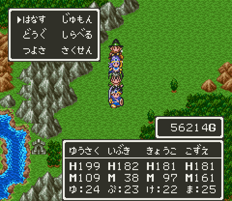
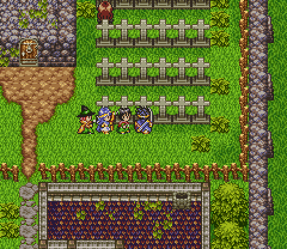

勇者鬥惡龍３
非常好玩的一代！遊戲世界是參考地球地貌設計，並且有晝夜系統。劇情由國王授命主角組團出發討伐魔王，很簡單有力地展開英雄冒險事蹟，加上自行搭配各具特色的職業系統，會讓人陷入遊戲所帶來的故事情境，為之著迷。光想像 1988 年能在紅白機玩這樣的 RPG，是多麼震撼人心的事！你很難想像容量有限的卡帶能擠進這些內容玩，龐大的遊戲內容、不同的玩法嘗試，使得 DQ3 反而要比 DQ4 有更久的遊戲時間。
超任版有群體攻擊的武器，戰鬥起來爽快很多，而且多了一個盜賊的職業，畫面更是精美無比，因此很難再回頭玩紅白機版～
手機版更是暢快！不但移植自超任版，而且加入 AI 系統，玩家只要對主角下達指令就好，提升練功效率。支援中斷存檔，野外也能 SL 大法闖關。加上有中文化，售價才 300 元，當然要趁機再玩一次！
但也不是沒有缺點，手機操作介面並不順手，經常按錯。AI 笨得可以，明明有些動作對敵人無效了，卻一直嘗試下去，整場戰鬥都在浪費回合數。不過經典就是經典，即使有這些缺點，還是玩得很高興就是了～
前言
創角
我用「高橋留美子」的《めぞん一刻》人物：五代裕作、音無響子、七尾こずえ、八神いぶき、三鷹瞬，來展開這場冒險～
ゆうさく
還有什麼比這更適合做為「勇者」的名字 XDDD
性向測驗時，除了「どんな理由であれ いちど かわした 約束を やぶってしまうのは 許されないことと 思いますか？」「ひとつのことをはじめると まわりが見えなくなることが よく ありますか?」選「いいえ」外，其它都選「はい」。進入皇宮後，與大臣對話全選「いいえ」，獲得「やさしいひと【優しい人】」的性格：
力↑5% 速↓5% 體↑5% 智↑10% 運↓5%
這樣勇者就跟五代裕作一樣優柔寡斷，但卻善解人意 :)
きょうこ
創角時職業為「あそびじん【遊び人】」，HP 不要太低，然後吃滿五顆力量種子。
輸入金手指 7E3957D8 和 7E395403 在主角身上改出「しゅくじょへのみち【淑女への道】」，將性格轉為「おじょうさま【御嬢様】」：
力－ 速↓20% 體↓5% 智↑10% 運↑40%
Lv.13 可以學會「くちぶえ」原地吹哨叫找敵人來戰鬥，Lv.20 直接轉「けんじゃ【賢者】」。
こずえ
創角時職業為「しょうにん【商人】」，HP 不要太低，然後吃滿五顆力量種子。
輸入金手指 7E3957E1 和 7E395403 在主角身上改出「ユーモアのほん【Humor book】」將性格轉為「おちょうしもの【御調子者】」：
力－ 速↑20% 體↓5% 智↑15% 運↑10%
Lv.12 可以學會「あなほり」隨機獲得財寶，Lv.17 可以學會「おおごえ」招喚旅館和商店，然後轉職為「まほうつかい【魔法使い】」。
いぶき
創角時職業為「とうぞく【盗賊】」，HP 不要太低，然後吃滿五顆力量種子。
輸入金手指 7E3957DD 和 7E395403 在主角身上改出「おてんばじてん【御転婆辞典】」將性格轉為「おてんば【御転婆】」：
力↑10% 速↑10% 體↓20% 智↓10% 運↓10%
Lv.8 可以學會「タカのめ」看到附近城鎮或迷宮的位置，Lv.10 可以學會「フローミ」取得所在地名，Lv.13 可以學會「とうぞくのはな」嗅出未開的寶箱數量，Lv.17 可以學會「しのびあし」遇敵率下降，Lv.20 可以學會「レミラーマ」讓隱藏寶物發光，然後轉職為「ぶとうか【武闘家】」。
しゅん
純粹創來丟到紐約開發新市鎮解任務用的「商人」。
更多性格推薦（顯示完整內容）
因為是一男三女的隊伍陣容，因此主角性格可以順理成章為好色的「むっつりスケベ【ムッツリ助平】」。與「やさしいひと【優しい人】」一樣，不過進入皇宮後，與大臣對話全部選「はい」。這是被認為平均能力最棒的性格：
力↑5% 速↓5% 體↑20% 智↑5% 運↓10%
其他大幅犧牲各項屬性，來讓某特定能力達到極致的性格，有「力」的「ごうけつ【豪傑】」，全部選「はい」，殺死一個村民後離開：
力↑40% 速↓30% 體- 智↓20% 運↓30%
以及「體」的「タフガイ【TOUGH GUY】」，除了「どんな理由であれ いちど かわした 約束を やぶってしまうのは 許されないことと 思いますか？」以外全部選「はい」，然後推石頭到老人前面 40 次：
力↑15% 速↓10% 體↑40% 智↓20% 運↓30%
至於「速」的「でんこうせっか【電光石火】」、「智」的「きれもの【切れ者】」、「運」的「ラッキーマン【LUCKY MAN】」只能靠道具轉換，靠性向測驗只能取得的「いのちしらず【命知らず】」「ずのうめいせき【頭脳明晰】」「しあわせもの【幸せ者】」能力都不夠極致，因此不建議。
最後，個人覺得整個性向測驗都選「いいえ」的性格「いっぴきおおかみ【一匹狼】」也不錯！初期升級時屬性成長幅度較大，讓升級速度緩慢的主角至少每一等級都有明顯成長，而變得比較好練些：
力－ 速↑10% 體↑20% 智↑10% 運↓30%
心理準備（顯示完整內容）
雖然一邊想像這是《めぞん一刻》一男三女的「愛情故事」一邊冒險是蠻有趣的！但這樣陣容並不好練，因為只能靠勇者和武鬥家攻擊，賢者與魔法使的咒語不是威力太低就是敵人免疫，根本發揮不了攻擊效用。如果咒語打中敵人的效用高一點會更好玩～
想說商人不轉職為魔法使或許比較好，中期就可以拿到攻擊力 +110 的正義算盤，而且還能檢視物品！不過，沒有魔法使，只靠升等龜速的賢者，陣中會有很長一段時間沒人施放「バイキルト」，幾乎沒辦法打王 Orz
或許真正理想的練法，是先練咒語型，再轉物理型，這樣就能兼顧咒語與攻擊，不過得 Lv.41 級確定咒語都學滿了才想轉職，恐怕還沒獲得成就感，就已經玩膩了。
那前期照規矩玩，進入「バラモス城」時再把最好的裝備改出來用好了！不然真的弱到不好玩…結果進入「アレフガルド」少了打裝備的樂趣，畢竟尋找王者之劍、光之鎧、勇者之盾才是這遊戲的高潮啊～
最後還是採用「勇者＋武鬥家＋賢者＋魔法使」的陣容，且這樣長得像更像五代裕作、八神伊吹、音無響子、七尾梢……


不像紅白機版錢難賺東西又貴，常常錢不夠用，超任版是有錢也沒地方花，因為大富翁與小徽章提供不少實用的裝備，很少需要再添購東西～
攻略
簡單的說，為了前往「バラモス城」，所以先「蒐集三把鑰匙」，然後「蒐集六色寶珠」，但真正的魔王活在幽冥地底世界裡～
玩法是允許自己用模擬器的 S/L 大法，好讓吃種子時數值高一點、或升級時能力強一點，雖然作弊，但比起修改還是保留了絕大多數的樂趣。拿手絕活就是三不五時用「ルーラ」哭著回家找媽媽 ＱＱ
盗賊の鍵
進入「アリアハン城」西邊的洞窟，進入塔內向老人取得「とうぞくのかぎ【盗賊の鍵】」，這樣就可以打開「レーベ村」紅色門扉的民宅領取「まほうのたま【魔法の玉】」，炸開東邊洞窟的牆，前往「ロマリア城」。
魔法の鍵
為了幫「ロマリア城」國王打倒西邊「シャンパーニ塔」的「カンダタ」奪回「きんのかんむり【金の冠】」，必須強化現在的團隊作戰能力才行…
勇 6 せいなるナイフ たびびとのふく －－－－－ きのぼうし －－－－－
商 8 どうのつるぎ たびびとのふく －－－－－ －－－－－－－ －－－－－
盗 8 とげのむち ぬののふく －－－－－ －－－－－－－ －－－－－
遊 8 こんぼう たびびとのふく －－－－－ －－－－－－－ －－－－－
Ex: 617 / 1628G
拿城內搜刮到的「すごろくけん」進入北方的「すごろく場」，用模擬器的 S/L 大法玩大富翁（雖然作弊但也是辛苦得來的），除了在終點取得「はがねのつるぎ【鋼の剣】」強化勇者的攻擊力外，別忘了瓶子、櫃子、寶箱也不要錯過！然後往北到「カザーブ村」一邊練功一邊賺錢幫所有隊員購買「チェーンクロス【Chain Cross】」。
這樣應該就有實力前往挑戰「カンダタ」了！不過手頭經濟拮据，所以先別把「きんのかんむり【金の冠】」還給國王，而是自己先拿來當作頭盔裝備使用，以後再還。
接著前往西北方「エルフの隠れ里」附近的洞窟取得「ゆめみるルビー【夢見るRUBY】」，與「エルフ女王」交換「めざめのこな【目覚めの粉】」，在「ノアニール村」使用它來破除詛咒。這個洞窟有恢復 HP 與 MP 的清泉，是相當不錯的修練地點！
勇 10 はがねのつるぎ てつのよろい うろこのたて きのぼうし －－－－－－－
商 12 チェーンクロス てつのよろい うろこのたて きのぼうし くじけぬこころ
盗 12 チェーンクロス かわのドレス うろこのたて きのぼうし －－－－－－－
遊 12 てつのやり かわのこしまき うろこのたて けがわのフード ガーターベルト
Ex: 3325 / 1545G （注意飾品會改變性格。）
往「ロマリア城」東方走來到「アッサラーム町」，搜刮一番後，往南再作弊玩一次「すごろく場」拿走所有寶物，接著往西進入一片沙漠，先搜刮沼澤地中祠堂的東西，再繼續往西搜刮「イシス城下町」與「イシス城」，特別是速度加倍的「ほしふるうでわ【星降る腕輪】」！然後往北進入金字塔，依「先開啟東邊內側的機關」「然後開啟西邊內側的機關」「接著開啟西邊外側的機關」「最後開啟東邊外側的機關」順序解開機關後，取得「まほぅのかぎ【魔法の鍵】」。
現在可以開啟灰色門扉，先回頭往過去的城鎮搜刮一遍，尤其是アリアハン城內的「ごうけつのうでわ【豪傑の腕輪】」，然後不要的裝備賣一賣，手頭上至少有 20000G，加上金字塔怪嫩錢多，多在這裡努力練功賺錢，往後就不需要省吃儉用才能買裝備了～
晚上進入イシス女王寢室，對話後殿查床頭獲得能恢復 MP 的「いのりのゆびわ【祈りの指輪】」，不過會亂數機率損壞…但不 care 模擬器 S/L 大法的話，基本上從今天起法力無限 XDDD
最後の鍵
經「ロマリア城」西方的祠堂來到「ボルトガ城」，國王希望我們能到「バハラタ町」購買「くろこしょう【黒胡椒】」，於是交代一封「おうのてがみ【王の手紙】」，要我們到「アッサラーム町」東北的洞窟，用它命令矮人開通山路，好讓我們前往「バハラタ町」。
不過黑胡椒店沒人顧，找町內南邊的老人對話，原來是店長「ダプタ」跑出去要救被綁架的妻子「タニア」。
在前往東北的洞窟幫忙救人之前，不妨再強化自己！
勇 12 はがねのむち はがねのよろい まほうのたて てつかぶと ほしふるうでわ
商 14 チェーンクロス マジカルスカート まほうのたて けがわのフード いかりのタトゥー
盗 14 はがねのむち くろしょうぞく まほうのたて くろずきん ごうけつのうでわ
遊 14 はがねのむち はでなふく まほうのたて けがわのフード ガーターベルト
Ex: 7212 / 13817G
從「バハラタ町」往東向北方走則可來到「ダーマ神殿」，然後進入北方的塔，除了可以拿到「さとりのしょ【悟りの書】」，重點是有很長繩索的 5F 常常出現經驗值破千的「メタルスライム」，其次是「スカイドラゴン」，很快就能修練到 20 級然後轉職。
轉職後用 Cheat Engine 把隊員歸零的經驗值改回來（什麼？又作弊！），然後往東北地方走，可以前往「ムオル村」，除了添購裝備，重點是獲得勇者父親的遺物「オルテガのかぶと【オルテガの兜】」。再到金字塔進入隱藏階梯取得武闘家專用的「おうごんのつめ【黄金の爪】」，然後輕輕鬆鬆解救人質吧…
勇 20 はがねのむち はがねのよろい まほうのたて オルテガのかぶと ほしふるうでわ
武 19 おうごんのつめ くろしょうぞく －－－－－－ くろずきん ごうけつのうでわ
賢 18 はがねのむち きぬのローブ まほうのたて てつかぶと ガーターベルト
魔 20 やいばのブーメラン マジカルスカート まほうのたて ぎんのかみかざり いかりのタトゥー
Ex: 42001 / 37213G
到黑胡椒店領取獎賞「くろこしょう【黒胡椒】」，回報「ボルトガ城」國王，獲得一艘船～
從「アリアハン城」乘船往西來到「ランシール村」購買「きえさりそう【消え去り草】」。順路往西南前往冰原的祠堂搜刮小徽章，然後往南偏西處的離島有座「エジンベア城」，在城內擋住去路的衛兵前使用「きえさりそう【消え去り草】」就能隱身進入城內！進入樓下，解開三塊巨石的機關，取得「かわきのつぼ【渇きの壷】」。
從「ダーマ神殿」乘船出水路往東來到「ジパング村」，然後沿著陸塊往北走，會看到一塊淺灘，靠近後使用「かわきのつぼ【渇きの壷】」會浮出一塊陸地，進去開啟寶箱獲得「さいごのかぎ【最後の鍵】」。
現在可以開啟世界上所有的門，回頭搜刮過去城鎮的寶箱，主要是ロマリア的「ふうじんのたて【風神の盾】」與「アサシンダガー【ASSASSIN DAGGER】」，準備好再出發吧！
勇 21 はがねのむち まほうのよろい まほうのたて オルテガのかぶと ほしふるうでわ
武 20 おうごんのつめ くろしょうぞく ふうじんのたて くろずきん ごうけつのうでわ
賢 19 はがねのむち まほうのよろい まほうのたて ぎんのかみかざり ガーターベルト
魔 21 やいばのブーメラン マジカルスカート まほうのたて けがわのフード インテリめがね
Ex: 50851 / 42827G
現階段法師攻擊力還不錯，等後期只是幫怪物搔癢時，才裝備「アサシンダガー」。
不死鳥ラーミア
從「ムオル村」乘船往東將看到一座塔，裡面可以取得「やまびこのふえ【山彦の笛】」，在有七色寶珠的地方吹奏時會產生回音～
出塔後，往南走來到「海賊の家」，屋外推開岩石然後調查該處，可以發現密道，進去後開啟寶箱取得「レッドオーブ【RED ORB】」。（從海賊の家乘船往東南可前往「ルザミ島」內搜刮。）
從「ランシール村」乘船往西北方尋找「テドン村」，晚上進去和牢房裡的囚犯對話，獲得「グリーンオーブ【GREEN ORB】」。（武器店上樓有可將白晝變黑夜的「やみのランプ【闇のLAMP】」，搭配每次傳送後都會變白天的「ルーラ」，是在還沒學到「ラナルータ」之前的絕妙組合。）
在「ランシール村」接受試煉，單槍匹馬進入地穴取得「ブルーオーブ【BLUE ORB】」，「だいちのよろい【大地の鎧】」也不要錯過。
勇 23 はがねのむち だいちのよろい まほうのたて オルテガのかぶと ほしふるうでわ
武 22 おうごんのつめ しのびのふく ふうじんのたて くろずきん ごうけつのうでわ
賢 21 はがねのむち まほうのよろい まほうのたて とんがりぼうし ガーターベルト
魔 23 やいばのブーメラン マジカルスカート まほうのたて ぎんのかみかざり インテリめがね
Ex: 69016 / 65118G
從「アリアハン城」乘船往南偏東有塊冰原，進入綠地，往右上方尋覓一間小屋，有個老人想要「へんげのつえ【変化の杖】」。冰原往南的對岸有座祠堂，進去後最右邊的池塘可以傳送到「サマンオ城」。與國王對話後被關進牢房，循密道發現真正的國王被囚禁，逃出後前往南方的洞窟，故意跳落 B2 的陷阱，才能開啟 B3 藏有「ラーのかがみ【RAの鏡】（埃及太陽神 Ra）」寶箱。晚上潛入「サマンオ城」國王的寢室，使用「ラーのかがみ【RAの鏡】」逼頭目現出原形，打敗牠取得「へんげのつえ【変化の杖】」。先用它變身為怪物，到「エルフの隠れ里」的商店買足東西才交換，然後和老人交換「ふなのりのほね【船乗りの骨】」。
使用「ふなのりのほね【船乗りの骨】」探出幽靈船的位置（否則不會出現），就在「ボルトガ城」東邊那個海域裡，進去取得「あいのおもいで【愛の思い出】」。從「ノアニール村」乘船沿著陸塊往東，進入會將船隻彈回的海峽，彈回過程中使用「あいのおもいで【愛の思い出】」就能破除詛咒而順利通過。通過後進入祠堂裡面，調查最右下角牢房的床邊可獲得「ガイアのつるぎ【GAIAの剣】（希臘眾神之母大地女神 Gaia）」。祠堂上方的洞窟則是第三個「すごろく場」，這次商店有賣「ほのおのブーメラン【炎のBOOMERANG】」「はやてのリング【疾風のRING】」不要錯過。右邊廣大的樹林四座巨石中央處調查，可取得「せかいじゅのは【世界樹の葉】」。
勇 25 ゾンビキラー だいちのよろい ドラゴンシールド オルテガのかぶと ほしふるうでわ
武 24 おうごんのつめ しのびのふく ふうじんのたて ぎんのかみかざり ごうけつのうでわ
賢 23 ドラゴンテイル まほうのよろい まほうのたて とんがりぼうし ガーターベルト
魔 25 ほのおのブーメラン てんしのローブ まほうのたて ぎんのかみかざり はやてのリング
Ex: 91743 / 61512G
「ジパング村」打倒洞窟的頭目可獲得「くさなぎのけん【草薙の剣】」，再解決一次獲得「パープルオーブ【PURPLE ORB】」。
帶一名商人，從「ボルトガ城」乘船往西，尋找茂密樹林中的一塊綠地，進去後與老人對話，答應留下商人負責開發這片新生地。然後進進出出個幾次，直到商人當上國王後，等晚上再進去，左下角會有群 NPC 密謀推翻政權。到了白天再進去，與被關在牢房的商人對話，然後前往王座後面調查，取得「イエローオーブ【YELLOW ORB】」。（往西的「スー村」在水井前調查可獲得「いかづちのつえ【雷の杖】」。）（FC 版請先進行下一個攻略，否則村莊不會成長。）
勇 26 ドラゴンキラー だいちのよろい ドラゴンシールド オルテガのかぶと ほしふるうでわ
武 25 おうごんのつめ しのびのふく ふうじんのたて ぎんのかみかざり ごうけつのうでわ
賢 24 ドラゴンテイル まほうのよろい まほうのたて とんがりぼうし しっぷうのバンダナ
魔 26 ほのおのブーメラン てんしのローブ まほうのたて ぎんのかみかざり はやてのリング
Ex: 107221 / 64162G
從「アッサラーム町」乘船南下來到火山口，使用「ガイアのつるぎ【GAIAの剣】」，會噴發岩漿填平海路，走這條路通過地穴（2F 有「いなずまのけん【稲妻の剣】」「やいばのよろい【刃の鎧】」），來到祠堂領取「シルバーオーブ【SILVER ORB】」。
從「ランシール村」乘船再次進入西南方冰原的祠堂，在每個台前不分順序使用各個寶珠，招喚不死鳥「ラーミア」，乘坐祂飛向「バラモス城」討伐魔王吧！
勇 35 いなずまのけん やいばのよろい ドラゴンシールド オルテガのかぶと ほしふるうでわ
武 34 おうごんのつめ しのびのふく ふうじんのたて ぎんのかみかざり ごうけつのうでわ
賢 32 ドラゴンテイル まほうのよろい まほうのたて とんがりぼうし しっぷうのバンダナ
魔 35 いかづちのつえ てんしのローブ まほうのたて ぎんのかみかざり はやてのリング
Ex: 350881 / 106043G
在「バラモス城」練功時改讓勇者裝備「ほのおのブーメラン」才會好練！不然像是出現一組四匹「エビルマージ」時，因為根本不怕賢者與法師的魔法攻擊，只靠勇者和武鬥家一人秒一隻，無法第一回合清光，結果被他們放「マヒャド」打假的。
幸好有經驗值破萬的「はぐれメタル」可打，修練過程還算順利。到勇者與賢者都學會「べホマ」使隊中有兩人能夠補滿血，且賢者能放「フバーハ」降低範圍魔法傷害（雖然覺得對魔王來說似乎沒用）後，勉強解決了「バラモス」！
闇の世界
解決「バラモス」回「アリアハン城」接受國王的授勳大典時，真正的大魔王「ゾーマ」消滅掉士兵並對勇者團隊嗆聲，於是我們從「バラモス城」東方被毒沼包圍的洞窟跳入裂縫來到幽冥世界「アレフガルド」！
搭船隻離開碼頭隨即往東來到「ラダトーム町」，在城內廚房下方密道取得「たいようのいし【太陽の石】」，與城頂神父對話獲得「ようせいのちず【妖精の地図】」。
在北方洞窟可取得「ゆうしゃのたて【勇者の盾】」，這裡無法使用魔法，必須速戰速決。反正 B1 和 B2 都沒寶箱好探索，第一層直接往最右下角走，第二層直接往最左上角走，東西就在第三層五個寶箱中。
西北方祠堂地下室寶箱右邊調查可獲得招喚怪物來戰鬥的「ぎんのたてごと【銀の竪琴】」。
往西南走來到「ドムドーラ町」，通過馬廄在牧草中間調查獲得「オリハルコン」。（途中經過的洞窟裡面有受詛咒的裝備可賣，也有小徽章。）
乘船來到這個世界東北方的「マイラ村」，將「オリハルコン」賣給道具店，離開村莊再來道具店，可購得「おうじゃのけん【王者の剣】」。井底有「すごろく場」，終點的「ひかりのドレス【光のDRESS】」、鑰匙處的「いのちのゆびわ【命の指輪】」與「グリンガムのムチ【GRINGHAM WHIP】」、場內「やみのころも【闇の衣】」、商店賣的「ドラゴンローブ【DRAGON ROBE】」與「らいじんのけん【雷神の剣】」都是夢幻逸品～
在溫泉下方盡頭處調查獲得「ようせいのふえ【妖精の笛】」，然後乘船到西北方的塔用它解除 5F「ルビス」被石化的詛咒，獲得「せいなるまもり【聖なる守り】」，此外塔 4F 還有「ひかりのよろい【光の鎧】」，至此勇者頂裝全數入手！（盜賊之鼻嗅出 3F 有兩個寶箱，但我怎麼找都只有一個。）
勇 37 おうじゃのけん ひかりのよろい ゆうしゃのたて オルテガのかぶと せいなるまもり
武 35 ドラゴンクロウ やみのころも ふうじんのたて ぎんのかみかざり ごうけつのうでわ
賢 34 グリンガムのムチ ひかりのドレス みかがみのたて ミスリルヘルム ほしふるうでわ
魔 37 ほのおのブーメラン ドラゴンローブ まほうのたて ミスリルヘルム しっぷうのバンダナ
Ex: 436326 / 35458G
咒語打不到、普攻像搔癢的魔法使，則攜帶「けんじゃのつえ【賢者の杖】」「ふっかつのつえ【復活の杖】」，擔任免費補血和復活的角色，現在團隊陣容總算所向披靡了～
從「ドムドーラ町」往南到底再向東來到「メルキド城塞」，搜刮之後回頭轉往南方的祠堂取得「あまぐものつえ【雨雲の杖】」。
這次從「ドムドーラ町」往南旋即往東穿越峽間來到「リムルダール町」，搜刮之後前往南方島嶼的祠堂，神父會將「たいようのいし【太陽の石】」「あまぐものつえ【雨雲の杖】」合成為「にじのしずく【虹の雫】」。
回到地上世界乘不死鳥飛向「竜の女王」的城堡，領取可以破除「ゾーマ」魔力的「ひかりのたま【光の玉】」。然後往「リムルダール町」西北角走，在可以銜接對岸陸塊的地方使用「にじのしずく【虹の雫】」搭橋，通向「ゾーマ」的居城拯救世界吧！
神竜
重新啟動遊戲，讀取進度時會發現破關過的冒險書出現「.ロト」字樣！這表示開啟了隱藏關卡，可以挑戰更強的對手，取得更究極的裝備！
進入「竜の女王」城內往上走，沐浴在窗戶灑進來的陽光中，會被傳送到天界。
穿過迷宮，來到天空之城「ゼニス」，開始神龍之謎的測驗。與吟遊詩人第一次對話後，前往「テドン村」教會十字架前調查獲得「まじゅうのツメ【魔獣の爪】」。第二次可以前往「メルキド町」中央隱蔽花園的右上方花叢調查獲得「やみのころも【闇の衣】」。第三次可以前往「ルザミ島」右下民宅在看望遠鏡的人右邊調查獲得「けんじゃのいし【賢者の石】」。
出「ゼニス城」前往「天界の塔」，裡面有「はかいのてっきゅう【破壊の鉄球】」「しあわせのくつ【幸せの靴】」。通過後，如果能在 35 回合之內擊敗「神竜」就能許願：「ジパング村的井裡建立すごろく場」「讓勇者父親オルテガ復活」「獲得一本エッチなほん」。第二次再許願的話必須在 25 回合內擊敗祂，第三次則是 15 回合。
這第五個「すごろく場」除了終點的「ふしぎなボレロ【不思議なBOLLERO】」「めがみのゆびわ【女神の指輪】」之外，4F 商店可盡情購買「ひかりのドレス【光のDRESS】」，寶箱還有「はかいのてっきゅう【破壊の鉄球】」！
「オルテガ」復活後，回家可以看到父親坐在客廳與母親聊天，這一觸目很是感人，不過不能招募。
勇 おうじゃのけん ひかりのよろい ゆうしゃのたて グレートヘルム めがみのゆびわ
武 はかいのてっきゅう やみのころも ふうじんのたて ぎんのかみかざり めがみのゆびわ
賢 グリンガムのムチ ひかりのドレス みかがみのたて ミスリルヘルム めがみのゆびわ
魔 ほのおのブーメラン ドラゴンローブ まほうのたて ふしぎなぼうし めがみのゆびわ
地圖
世界地図
ダンジョン
．岬の洞窟
．ナジミの塔
．いざないの洞窟
．シャンパーニの塔
．ノアニール西の洞窟
．ピラミッド
．バハラタ東の洞窟
．ガルナの塔
．アープの塔
．地球のへそ
．サマンオサ南の洞窟
．ジパングの洞窟
．ネクロゴンドの洞窟
．バラモス城
．ラダトーム北の洞窟
．岩山の洞窟
．ルビスの塔
．ゾーマの城
．隠しダンジョン、二
{kind=link}
心得
練法
一開始的勇者、戰士、僧侶、魔法使，其實就是很強的陣容，不用轉職就能破關！
要變得更強的話，就是在僧侶和魔法使學會所有呪文後（最快要 Lv.41），轉職為武鬥家和盜賊，成為既可施法、又能普通攻擊的角色。
盜賊力量和敏捷都不錯，升級又會提升 MP，是魔法使轉職首選。
武鬥家雖然升級不會提升 MP，但戰鬥一開始就率先秒殺掉一隻怪物的速度和攻擊力，要比繼續提升 MP 有用多了，適合只把 MP 用來補血的僧侶。
戰士後期是最弱的，升級會變慢，敏捷又低，總是最後一個攻擊的人。但不轉職，繼續穿強力裝備頂住怪物的攻擊，還是很有用處的！要轉職的話，就選賢者賦予施法的能力，順便補上武鬥家和盜賊 MP 的不足。但呪文經常打不到怪，不擅長普通攻擊的賢者不見得比當肉盾的戰士好用。加上賢者升級慢，總是慢同伴好幾步才能學到呪文，淪為輔助角色。
其他組合，例如商人和藝人，則是等勇者練起來後，再重新創造同伴去嘗試～
種子
其實不用太在意吃下種子所提升的數值，因為現在吃得高了，升級時會因為夠高，所以不提升該屬性。例如 Lv.1 就吞下 10 顆力量種子，每次都最大值 3 獲得 30 點力量，接下來你會發現升級時每次力量都 +0，要等到系統覺得你力量不夠了，才會繼續增加力量。
在這樣的設計下，吃力量種子的好處，只是更快獲得高等級的力量值，而不是累積更多力量。
所以把種子賣掉換錢也無所謂，或者先留著，等 Lv.60 後很難升級了再開始吃。但不用等 Lv.99 再吃，因為差不多 Lv.80，主角力量就 255 了～
把種子留下來給同伴吃，提升弱項也是不錯的選擇，例如戰士敏捷很低，就等 Lv.60 時再餵他吃速度種子。
中文版亂碼
網路流傳「精灵制作组」的繁簡漢化版 v0.99.2 可玩，不過必須勾選 Emulation → Hacks → Block invalid VRAM acccess，否則會亂碼。
修改
遊戲會檢查玩家的數據，改得超過，系統判斷不合理，會將紀錄損毀！
而且不只修改資料，用即時存檔和讀檔吃種子，能力超過角色等級的合理範圍，都會視為作弊。
最保險的還是修改經驗值，打怪升級。只要角色等級夠高，系統允許的判定範圍就越寬鬆。
怕紀錄消失的話，原則就是：「等級低時不要修改！」
物品
主角道具欄
7E3955~7E3960
還必須搭配 7E3954 設定物品數量。
背包
注意！背包一經修改，就會造成資料錯誤，導致儲存的冒險書在重新載入遊戲時檢查失敗而銷毀。
第一欄物品 7E3725
第一欄數量 7E3825
物品代碼
01 ひのきの棒
02 こん棒
03 銅の剣
04 聖なるナイフ
05 鉄の槍
06 鉄の斧
07 鋼鉄の剣
08 魔道士の杖
09 毒針
0A 鉄の爪
0B とげの鞭
0C 大鋏
0D くさり鎌
0E 雷神の剣
0F 吹雪の剣
10 魔神の斧
11 雨雲の杖
12 ガイアの剣
13 さざなみの杖
14 破壊の剣
15 諸刃の剣
16 理力の杖
17 誘惑の剣
18 ゾンビキラー
19 はやぶさの剣
1A 大金槌
1B 黄金の爪
1C 稲妻の剣
1D いかずちの杖
1E 王者の剣
1F 草薙の剣
20 ドラゴンキラー
21 裁きの杖
22 鋼鉄の鞭
23 チェーンクロス
24 グリンガムの鞭
25 モーニングスター
26 ブーメラン
27 刃のブーメラン
28 炎のブーメラン
29 破壊の鉄球
2A 鉄のそろばん
2B 魔法のそろばん
2C 正義のそろばん
2D バスタードソード
2E ルーンスタッフ
2F 賢者の杖
30 眠りの杖
31 アサシンダガー
32 ホーリーランス
33 パワーナックル
34 ドラゴンクロウ
35 魔獣の爪
36 ブロンズナイフ
37 鋼鉄のはりせん
38 魔封じの杖
39 復活の杖
3A バトルアックス
3B ウォーハンマー
3C ドラゴンテイル
3D 布の服
3E 稽古着
3F 皮の鎧
40 派手な服
41 鉄の鎧
42 鋼鉄の鎧
43 魔法の鎧
44 身かわしの服
45 光の鎧
46 鉄のまえかけ
47 ぬいぐるみ
48 武闘着
49 魔法の法衣
4A 地獄の鎧
4B 水の羽衣
4C くさりかたびら
4D 旅人の服
4E あぶない水着
4F 魔法のビキニ
50 甲羅の鎧
51 大地の鎧
52 ドラゴンメイル
53 刃の鎧
54 天使のローブ
55 カメの甲羅
56 皮の腰巻
57 皮のドレス
58 ステテコパンツ
59 マジカルスカート
5A 光のドレス
5B ドラゴンローブ
5C 黒装束
5D 絹のローブ
5E 魔法のまえかけ
5F おしゃれなスーツ
60 パーティードレス
61 闇の衣
62 不思議なボレロ
63 神秘のビキニ
64 忍びの服
65 皮の盾
66 鉄の盾
67 力の盾
68 勇者の盾
69 嘆きの盾
6A 青銅の盾
6B 水鏡の盾
6C うろこの盾
6D 魔法の盾
6E ドラゴンシールド
6F 風神の盾
70 おなべのフタ
71 オーガシールド
72 金の冠
73 鉄兜
74 不思議な帽子
75 不幸の兜
76 オルテガの兜
77 ターバン
78 般若の面
79 皮の帽子
7A 鉄仮面
7B 木の帽子
7C 毛皮のフード
7D 銀の髪飾り
7E グレートヘルム
7F 黒頭巾
80 うさ耳バンド
81 シルクハット
82 ミスリルヘルム
83 とんがり帽子
84 聖なる守り
85 祈りの指輪
86 幸福の靴
87 星降る腕輪
88 悟りの書
89 水晶玉
8A 命の指輪
8B 力の指輪
8C うさぎの尻尾
8D 疾風のバンダナ
8E 石のかつら
8F ガーターベルト
90 モヒカンの毛
91 ルビーの腕輪
92 怒りのタトゥー
93 豪傑の腕輪
94 インテリ眼鏡
95 銀のロザリオ
96 おしゃぶり
97 ヘビメタリング
98 金のネックレス
99 はやてのリング
9A パワーベルト
9B 金のクチバシ
9C 黄金のティアラ
9D スライムピアス
9E 博愛リング
9F 逃げ逃げリング
A0 くじけぬ心
A1 ルーズソックス
A2 黒こしょう
A3 賢者の石
A4 ラーの鏡
A5 渇きの壷
A6 闇のランプ
A7 変化の杖
A8 命の石
A9 消え去り草
AA 魔法の玉
AB 盗賊の鍵
AC 魔法の鍵
AD 最後の鍵
AE 夢見るルビー
AF 目覚めの粉
B0 王の手紙
B1 オリハルコン
B2 力の種
B3 素早さの種
B4 スタミナの種
B5 ラックの種
B6 賢さの種
B7 命の木の実
B8 薬草
B9 毒消し草
BA 聖水
BB キメラの翼
BC 世界樹の葉
BD 死のオルゴール
BE 愛の思い出
BF 満月草
C0 水鉄砲
C1 船乗りの骨
C2 山彦の笛
C3 妖精の笛
C4 銀の竪琴
C5 光の玉
C6 毒蛾の粉
C7 まだらくも糸
C8 太陽の石
C9 虹の雫
CA シルバーオーブ
CB レッドオーブ
CC イエローオーブ
CD パープルオーブ
CE ブルーオーブ
CF グリーンオーブ
D0 小さなメダル
D1 不思議な地図
D2 妖精の地図
D3 ゴールドパス
D4 女神の指輪
D5 不思議な木の実
D6 優しくなれる本
D7 甘えん坊辞典
D8 淑女への道
D9 頭が冴える本
DA 力の秘密
DB 豪傑の秘訣
DC 開運の本
DD おてんば辞典
DE 悲しい物語
DF 勇気 100 倍
E0 負けたらあかん
E1 ユーモアの本
E2 エッチな本
E3 ずるっこの本
E4 すごろく券
金錢
7E3696~7E3698
金錢全滿
7E36963F
7E369742
7E36980F
戰鬥後經驗值和金錢
經驗 7E23DC~7E23DF
金錢 7E23E0~7E23E3
メタルスライム
7E23DC0B
7E23DD04
はぐれメタル
7E23DC42
7E23DD27
主角現在 MP 100
7E392F64
不會遇敵
7EF797FF
父親回家
7E355710